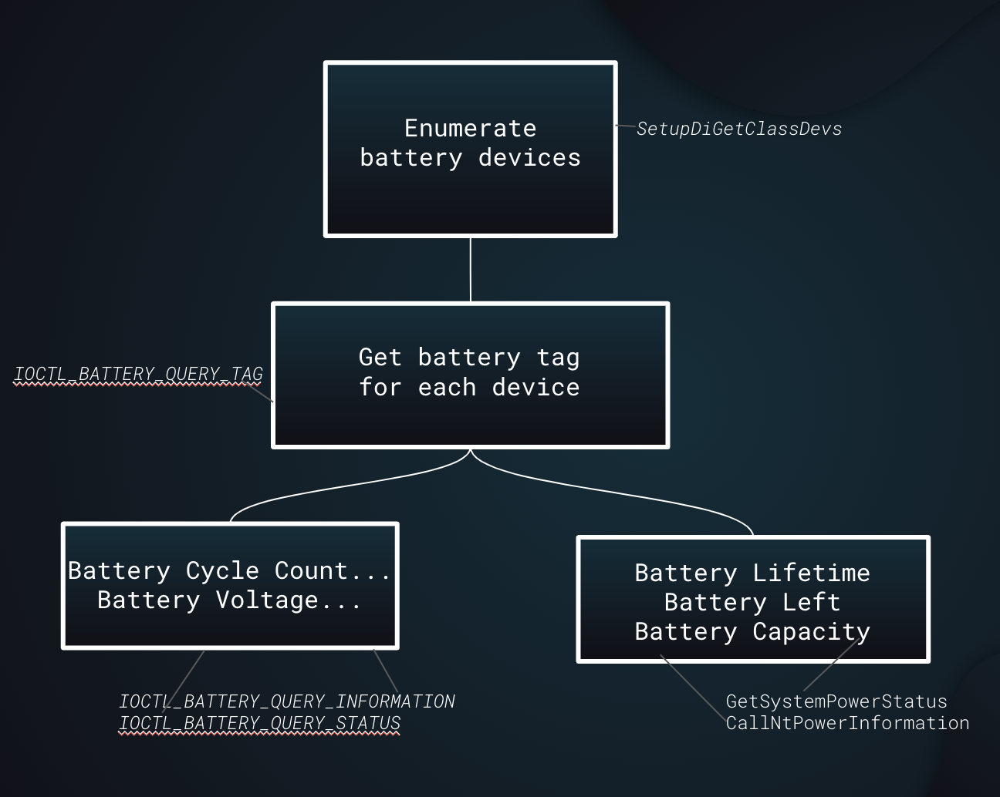
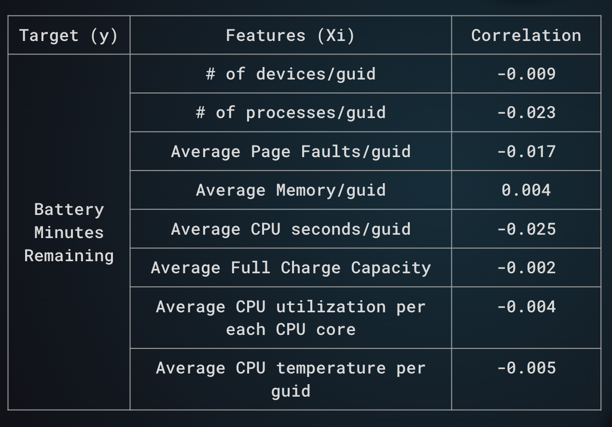
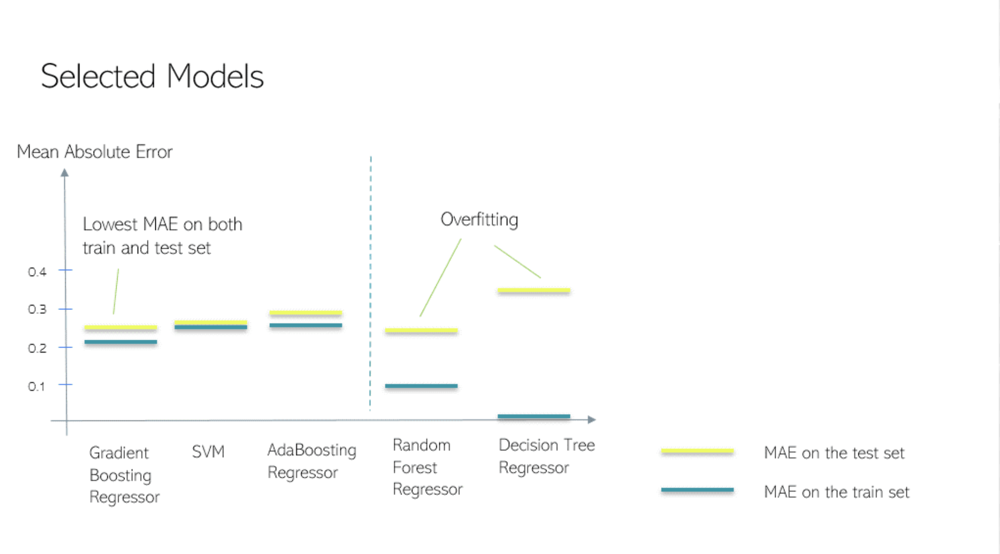

Problem Statement
Ever since the advent of personal computers and mobile devices, the attention has shifted to battery technology. Reasons for such are many, but one main factor is attributed to people’s rise of expectation in the speed and longevity of these devices. In the early days, the slow and glitchy devices used to be the norm. In fact, having one was a luxury in and out of itself. However, as tech companies competed against each other to release the better product, these devices began to see a dramatic increase in their speed and longevity. This in turn led to groups of scientists and engineers coming together to investigate and delve deeper into the problem of lagging, and the solution they believed would exponentially increase people’s device usage was to invest in battery technology. In an attempt to maintain the churn rate, groups of professionals flocked to battery experts to apply the latest technology onto their devices such that customer satisfaction would remain high. For such reasons, we would like to investigate the features that affect the battery’s estimated remaining time, and build a regression model based on those features to predict battery's remaining minutes.
Methods
We seperate Methods into 3 sections: Data Collection , Data Preparation , and (Correlation Analysis)
Data Collection
This part emphasized on the accomplishments we have done for the last quarter: We practiced the Data Collection process – Our interested data fields for collecting are those we believed that would be related to the lifetime of batteries
Basic Logic:
▪ Enumerate the battery devices through
▪ Enumerate the battery devices through
To retrieve information, we first need to request for
▪ To retrieve
▪ For other data we need, we also refer to

Data Preparation
For the second quarter, unlike what we have done for the previous one, we were provided with the pre-collected data by the Teams. Therefore, all of our analysis are based on those datasets.
Our interested datasets are Battery Events related dataset (
▪ We started with Device Usage related Dataset with filtering conditions of i) device name must be
▪ In order to filter out only DC battery, we switched focus on Battery Events related Datasets.
To filter out Battery Events dataset, we added the filtering conditions that the battery type should be
▪ We utilized those GUIDs for further filtering on other datasets (e.g. Battery Information related Dataset, Process related Dataset and CPU related Dataset). For CPU related Datasets, one additional filtering condition we added is that the data must contain information about CPU utilization per each CPU core or information about CPU temperature in centigrade.
EDA (Correlation Analysis)
We chose 8 features as our features on building our regression model for predicting battery remaining minutes.
Correlation Analysis:
The reasons for selecting those 8 features are that 1). From our experiences, we realized that when we have multiple process or devices are going on, usually the battery would have a lower remaining time; 2). When memory related issue occurs, it would always affect the performance of batteries. Therefore, we considered Page Faults and Memory as another features to select; 3). Static information of battery, for example, the full charged capacity or designed capacity would definitely define the attribute of battery, making the performance of battery different; 4). CPU related information would also be a factor the influence the battery remaining time.
Correlation Analysis indicates that there are weakly- negative correlation between battery minutes remaining and number of devices per guid, number of processes per guid, Average Page Faults per guid, Average CPU seconds per guid, Average Full Charge Capacity, Average CPU utilization per each CPU core, Average CPU temperature per guid. Even though the correlation values are pretty low, the negativity still confirms with our expectation as we believed that as the values of those features increase, battery minutes remaining should decrease. One possible explanation for the low value of correlation coefficients, as suggested by the Teams, is that those fields were mixed with both the DC and AC batteries, and we were unable to separate them.

Models
Selected Models
This part emphasized on the accomplishments we have done for the last quarter: We practiced the Data Collection process – Our interested data fields for collecting are those we believed that would be related to the lifetime of batteries
▪
We started building our prediction model based on Lin- ear Regression, the simplest regression model.
After training on the model on the training dataset and test on the test dataset, we obtained a Mean Squared Error of 0.2656 on
test dataset, which is lower than the mae of 0.2666 on the training set. We are not sure on the performance of this model,
and want to see whether we could decrease mae further, so we switch to improved models.
▪
We tried different models and selected 3 models with the lowest maes as our improved models: Gradient Boosting Regressor,
Support Vector Machine and AdaBoosting Regressor. For the other two models we have tried, we realized that these two models would overfit our data.
For our improved Model, we realized that only Gradient boosting Regressor, SVM, and
Adaboosting Regressor do not occur the issue of over-fitting, so we are going to pay more attention on those and
did Hypothesis Testing to see which one is the best improved model.

Hypothesis Testing
For the second quarter, unlike what we have done for the previous one, we were provided with the pre-collected data by the Teams. Therefore, all of our analysis are based on those datasets.
▪
In our hypothesis testing, we would like to understand the performance between the SVM and the Gradient Boosting Regressor on our Dataset.
● Null Hypothesis: There’s no difference in performance between SVM and Gradient Boosting Regressor
● Alternative Hypothesis: Boosting Regressor performs better than SVM.
Our test statistic for our hypothesis test is the observed difference between the MSE on the test set using Gradient Boosting Regressor and the MSE on the test set using AdaBoosting Regressor. With this, we then ran a simulation to generate new X and y by test, train, and split X and y in every new iteration, for a total of 1000 iterations. Our simulated differences in MSEs between the two models are displayed by the plot on the right
▪
After comparing the performance between SVM and Gradient Boosting Regressor,
we would like to understand the performance between AdaBoosting Regressor and Gradient Boosting Regressor on our Dataset.
From above, we could see that the mae generated by the Gradient Boosting Regressor performed better in the sense that the
mae on the test is lower than the mae on the test from AdaBoosting Regressor.
Since we would like to verify if Gradient Boosting Regressor’s performance is due to random chance or not, our null
and alternative hypothesis are as follow:
● Null Hypothesis: There’s no difference in performance between AdaBoosting Regressor and Gradient Boosting Regressor
● Alternative Hypothesis: Gradient Boosting Regressor performs better than AdaBoosting Regressor.
Comparing our observed test statistic to our simulated test statistics, our p-value comes out to be 0.015. As a result, we fail to reject the null hypothesis given our threshold of 0.05. This indicates that Gradient Boosting Regressor performs better than AdaBoosting Regressor.
Conclusions
Our goal is to understand the features that affect the battery’s estimated remaining time. Through our exploratory data analysis, we have found eight features, namely the number of devices, number of processes, average memory, average page faults, designed capacity, cpu percentage, cpu seconds, and cpu temperature. With these features in hand, we then built several models. In the end, we discovered that out of all, Gradient Boosting Regressor performs the best.
Also, among all those 8 features, we ranked them according to their importances. Surprisingly, we observed that page faults is the feature with the highest importance, meaning this feature contributes the most to our Gradient Boosting Regressor. Feature Importance analysis would en- able users to pay more attention to those important features that affect the battery remaining minutes.
Discussions / Limitations
▪ For our project, there are still a few limitations and future work we can build upon. The first one is that we understand that our features may not be enough since we can add user information as another feature for our model. This is because users playing games would always have a lower battery remaining time comparing to users using only basic operations.
▪ Second is that using the average of battery minutes remaining is not necessarily the best metric because let’s say that the users initially did not plug in the charger, so the battery remaining time would be 180 minutes; but after he or she started plugging in the charger, the remaining time would increase to, say, 240 minutes. Therefore, we expect the remaining minutes should be 240 minutes. But according to our averaging logic, we would get 210 minutes.
▪ The third limitation is that the feature ‘Number of Devices’ may be a confounding variable because of the fact that different devices would require different power of battery to run. Therefore, this might result in our correlation analysis be confounded.
▪ The last one is that we noticed that the correlation coefficients are pretty low. One explanation may be that our dataset is limited since fields such as CPU related information are mixed with both DC and AC data, which we were unable to separate.